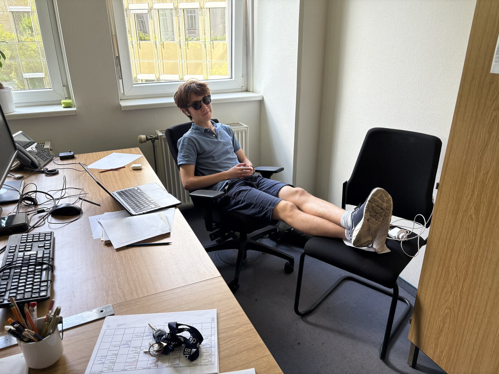

Hello! My name is Louie Merriam and I’m a senior at Sidwell Friends School. My primary areas of interest are in the digital humanities, computational linguistics, and in applying computation to study language and history. Some of my projects include analyses of the Indus script, Dravidian historical linguistics, Republican-era Chinese newspapers, and archival history in Washington, D.C.
I've worked at TU Berlin, Mount Zion-Female Union Band Society Cemeteries, and the New York Historical Society. My research has also been supported by an Emergent Ventures grant.
Outside of these projects, I run cross-country and track, play violin (with a passion for klezmer), and spend quite a good bit of time listening to ska, rocksteady, and Woody Guthrie. I've also been studying Yiddish over the past couple of years and have been compiling a collection of my favorite Yiddish curses and expressions.

Project highlights
-
This project aims to differentiate Indus script signs that are syllabic (phonetic) from those that are logographic. The work is documented in a published paper and follow-up now under review at Digital Applications in Archaeology and Cultural Heritage.
-
At TU Berlin, I built a structured database of Proto-Dravidian and the Dravidian languages under the supervision of Andreas Fuls and Martin Kada. One chapter describing this work is forthcoming in January 2027. Dravidian database →
-
Under the mentorship of Rajesh Rao, this project aims to cluster Indus signs based on their behaviors and to identify the semantic roles that these clusters serve. Our methods use only statistical and distributional evidence, without linguistic assumptions or biases. A chapter co-authored with Rao is forthcoming. This work was also featured in The Indian Express, “The Indus Code” →
-
I work on archival research, GIS mapping, and public digital resources for the Mount Zion-Female Union Band Cemetery. MZION/FUBS map → Wilberforce map →
-
A computational study on how written Chinese evolved between 1910 and 1945. A dataset compiling digitized newspapers from this era was published in the Journal of Open Humanities Data (2026), and a paper detailing the analyses was accepted in Computational Humanities Research (CHR 2027), to be presented in January 2027. Research Square preprint →
-
I used LLMs to analyze the British Museum's provenance records and identify unfair colonial acquisitions. I scraped over 20,000 records and built an interactive map to visualize their extraction. A paper detailing this project was accepted in Computational Humanities Research (CHR 2027), to be presented in January 2027. Provenance map →
Selected publications
-
The Evolution of Written Chinese (1910–1945): A Computational Newspaper Similarity Dataset
-
A Computational Method for Assigning Semantic Roles to Indus Script Sign Clusters Using Distributional Statistics
-
Computational Analysis of the Indus Script: Identifying Sign Functions in Logo-Syllabic Writing Systems